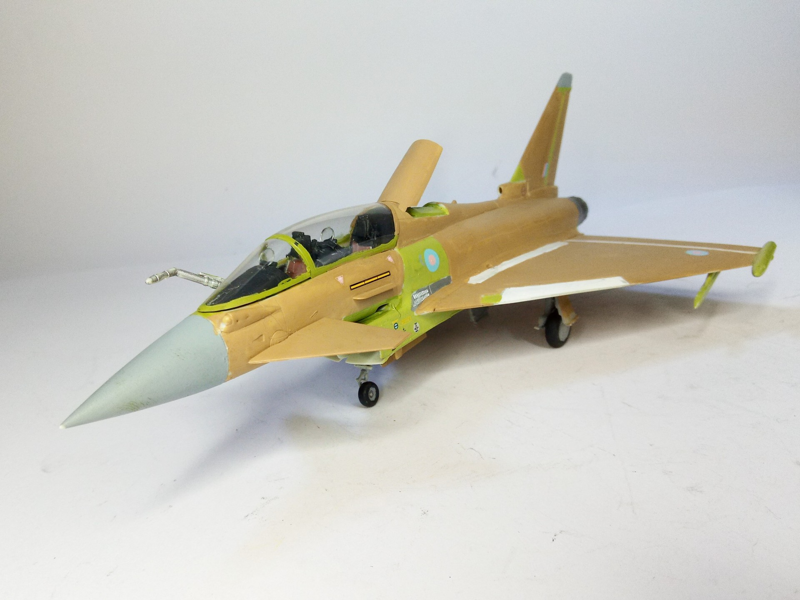
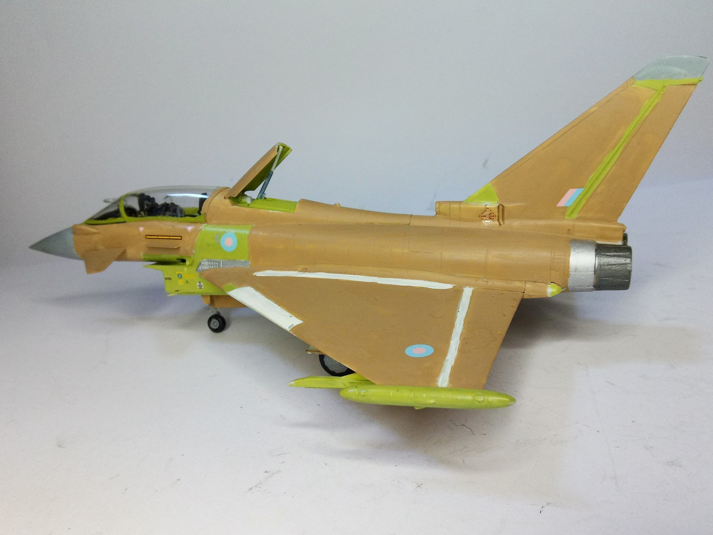

Aerei · scale model archive
Eurofighter Typhoon Twin Seater
Eurofighter Typhoon Twin Seater — Kit: Revell, Scale: 1/72. The model shows a RAF aircraft on the production line before painting #1/72 #Revell…

Photo gallery

English description
The model shows a RAF aircraft on the production line before painting
#1/72 #Revell #Eurofighter
Descrizione italiana
Il modello mostra un velivolo RAF sulla linea di produzione, prima della verniciatura.